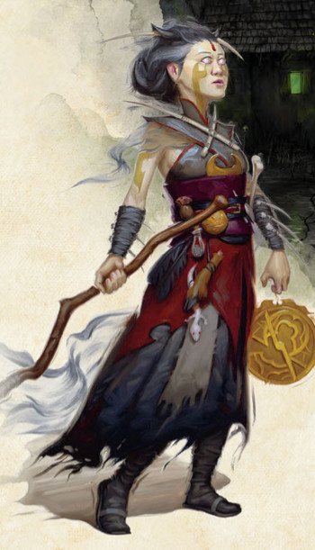

Le Fiélon
Les occultistes sont des utilisateurs de la magie qui accèdent à un pouvoir arcanique considérable en concluant un pacte avec un être d'Outremonde qui a besoin de pions parmi les mortels. Ce pouvoir est incroyable, mais a un coût intéressant et inhabituel. En fait, les occultistes sont si différents des autres classes de lanceurs de sorts qu’il vaut mieux oublier tout ce que vous savez et repartir de zéro.
Capacités du patron Fiélon
Le Fiélon est le patron le plus emblématique des occultistes. Comme Faust et Méphistophélès, vous avez négocié avec un être des plans inférieurs. Ce peut être l'archidiable de D&D connu sous le nom de Méphistophélès, ou n'importe quel autre archidiable ou seigneur-démon, voire même un de leurs subordonnés. Ce pacte n'est pas forcément intentionnel ; dans les romans d'Erin M. Evans, la jeune tieffeline Farideh conclut involontairement un pacte avec un cambion du nom de Lorcan et se retrouve entraînée dans un jeu du chat et de la souris avec des forces aussi puissantes qu'Asmodée.
Les occultistes obtiennent leur Patron d'Outremonde dès le niveau 1, ce qui contraste avec presque toutes les autres classes de D&D qui gagnent leur sous-classe aux niveaux 2 ou 3. Ils gagnent des capacités de sous-classe aux niveaux 1, 6, 10 et 14. En résumé, ces capacités de sous-classe permettent :
- D'accéder à une liste étendue de sorts à apprendre
- De gagner des points de vie temporaires chaque fois que vous tuez une créature hostile
- D'inviter votre patron à changer le destin en votre faveur
- De gagner la résistance à un type de dégât lorsque vous terminez un repos court (les armes magiques ou en argent ignorent cette résistance)
- D'envoyer une créature aux enfers où un mal surnaturel va attaquer son esprit
Avantages du patron Fiélon
Sceller un pacte avec le Fiélon fait de vous un occultiste incroyablement polyvalent. La classe d'occultiste vous permet même d'affiner votre pacte au niveau 3, en choisissant entre le Pacte de la Lame, le Pacte du Grimoire ou le Pacte de la Chaîne. Et quel que soit le type de pacte que vous décidez de conclure avec votre patron fiélon, ce dernier offre des capacités utiles pour chacun d'eux.
Le Fiélon tend à promouvoir un occultiste qui utilise des sorts et inflige des dégâts, mais il se prête aussi bien aux autres types d'occultistes, ce qui fait du Fiélon un excellent patron pour les nouveaux joueurs qui ne savent encore pas trop ce qu'ils veulent faire de leur personnage ou pour ceux qui veulent juste avoir une porte de sortie au cas où leur idée actuelle de personnage ne fonctionnerait pas. D'autres patrons d'occultiste comme l'archifée ou la lame maudite sont plus spécifiques, ce qui rend plus difficile l'expérimentation.
Inconvénients du patron Fiélon
L'occultiste est une classe incroyablement idiosyncratique [qui fait qu'un individu réagit de manière propre à des agents extérieurs]. Quiconque joue au occultiste après avoir joué une autre classe de lanceur de sorts s'aperçoit vite que le plus gros défi pour jouer cette classe est d'oublier tout ce qu'on sait des lanceurs de sorts, car les occultistes fonctionnent d'une manière complètement différente. Ils ont peu d'emplacements de sorts mais ceux-ci se récupèrent après un repos court, et non pas après un repos long comme pour tous les autres lanceurs de sorts. Ce n'est pas en soi un inconvénient de l'occultiste ou du patron Fiélon, mais les joueurs qui considèrent l'occultiste comme un magicien un peu bizarre n'auront pas autant de plaisir que ceux qui choisissent cette classe sans la comparer.
Quant au patron Fiélon, sa plus grande force est aussi sa plus grande faiblesse. La polyvalence est une chose incroyable, mais ne pas être en mesure de se spécialiser ou de trouver un créneau au sein de votre groupe peut être un problème. Toutefois, les occultistes sont incroyablement doués pour infliger des dégâts de loin et le patron Fiélon soutient assez bien ce créneau, même s’il n'est pas aussi spécialisé dans ce rôle que d'autres patrons d'Outremonde.
Exemple de personnage
Si vous jouez un occultiste de patron Fiélon de niveau 1, vous devez choisir une race qui vous donne un bonus en Charisme. La tieffeline Farideh est l'icône de l'occultiste de fiélon, et le bonus de Charisme que gagnent les tieffelins, ainsi que leurs sorts raciaux, en font d'excellents occultistes. De la même manière, les elfes noirs gagnent un bonus en Dextérité et en Charisme, et possèdent également des sorts innés. Le drakéide est aussi un choix racial intéressant pour un occultiste grâce à son bonus inné en Force, surtout si vous décidez de choisir le Pacte de la Lame plus tard.
Une fois que vous avez fait du Charisme votre meilleure caractéristique, définissez ce qui est important pour vous. Si vous voulez vous battre avec une épée et un bouclier ou avec une arme à deux mains, la Force devrait être votre deuxième caractéristique la plus importante. D'un autre côté, donner la priorité à la Dextérité fera de vous une terreur avec une rapière. La Constitution vous aidera également à encaisser plus de coups au combat et à conserver plus facilement vos précieux sorts de concentration (voir ci-dessous). La Sagesse et l'Intelligence ne vous seront pas inutiles, mais sont toutefois loin de devoir être votre deuxième ou troisième caractéristique.
Concernant l'équipement, une arme courante de votre choix, comme une dague ou un bâton, est utile. Le choix entre le focaliseur arcanique ou la sacoche à composantes est purement esthétique, et le sac d'exploration souterraine sera presque toujours plus utile que le sac d'érudit. Quelques dagues de plus, une armure de cuir et une autre arme courante de votre choix complètent votre arsenal. Vous pouvez porter une armure légère, alors essayez plus tard d'obtenir une armure de cuir cloutée.
Sorts
Les occultistes n'ont pas la capacité Incantation comme la plupart des autres lanceurs de sorts. Au lieu de cela, ils gagnent Magie de pacte. Vous commencez au niveau 1 en connaissant deux sorts mineurs, deux sorts de niveau 1 et avec un seul emplacement de sort, mais cet emplacement est récupéré à la fin de chaque repos court. Théoriquement, vous pouvez donc lancer des sorts toute la journée à condition de faire une petite sieste entre deux sorts. Il est également à noter que vos emplacements de sorts sont tous du niveau le plus élevé que vous pouvez lancer. Ce n'est pas utile à ce stade, mais le fait que vos sorts s'adaptent automatiquement à leur niveau de puissance le plus élevé possible est incroyable.
Vous n'avez pour le moment qu'un seul emplacement de sort, alors faites-en bon usage. Vous obtiendrez un deuxième emplacement au niveau 2, ce qui est bien, mais vous n'obtiendrez le troisième qu'au niveau 11... Heureusement vous obtenez le sort mineur le plus puissant du jeu, décharge occulte, de sorte que vous ne serez jamais inutile, même à court de sorts.
Vous pouvez apprendre deux sorts de niveau 1 parmi ceux de la liste de sorts d'occultiste et ceux de votre liste de sorts étendue. Choisissez ces sorts avec soin. Comme le nombre de sorts que vous connaissez est extrêmement limité, il est préférable d'avoir une liste de sorts polyvalents. Essayez donc de choisir un sort offensif et un sort défensif ou de soutien. Cette liste n'est toutefois là que pour vous aider à démarrer si vous jouez un occultiste de fiélon pour la première fois. Avec l'expérience, vous pouvez bien entendu choisir d'autres sorts.
- Armure d'Agathys (offensif/défensif)
- Charme-personne (social)
- Injonction (soutien)
- Maléfice (offensif)
En particulier à bas niveaux, un occultiste souhaitera avoir des sorts qui durent longtemps, car avec si peu d'emplacements de sorts, il est beaucoup plus efficace de maintenir sa concentration sur les sorts ayant des effets durables que de lancer un seul sort explosif. C'est pour cette raison que maléfice est l'un des sorts d'occultiste les plus puissants du jeu si vous voulez infliger d’énormes dégâts. Tant que vous êtes concentré, la créature ciblée subit 1d6 points de dégâts supplémentaires à chaque frappe. Et vous pouvez vous concentrer sur le sort même si une créature n'est pas actuellement maudite, ce qui vous permet de maintenir le sort entre deux combats tant que sa durée n'a pas expiré.
Vous avez également la possibilité de choisir deux sorts mineurs. À moins que vous ne souhaitiez jouer un occultiste atypique, décharge occulte est de loin le meilleur choix. C’est un des piliers de votre classe. Choisissez l'autre sort mineur comme bon vous semble ; c'est un bon moyen d'ajouter de la personnalité à votre personnage.
Manifestations occultes
Une fois que vous avez atteint le niveau 2, vous pouvez sélectionner deux Manifestations occultes. Vous pouvez échanger une ancienne manifestation pour une nouvelle chaque fois que vous passez un niveau dans cette classe, et vous gagnez de nouvelles manifestations tous les deux ou trois niveaux. Certaines manifestations ont des conditions préalables que vous devez remplir pour pouvoir les sélectionner, de sorte que savoir échanger d'anciennes manifestations pour de nouvelles est important. Voici donc quelques manifestations qui vous seront probablement utiles en tant qu'occultiste de fiélon :

Décharge déchirante . Vous infligez des dégâts supplémentaires avec décharge occulte ; que vouloir de plus ? Notez que lorsque vous pouvez lancer plusieurs faisceaux, chacun d'eux bénéficie de ces dégâts supplémentaires. Incroyable !
Armure d'ombres. Avec cette manifestation, votre CA sera presque toujours de 13 + votre modificateur de Dextérité. C'est super si vous constatez que les ennemis se liguent contre vous.
Présence captivante. Si votre campagne comporte beaucoup d'intrigues, ou si son arc est lourd en jeu de rôle, alors cette manifestation fera de vous un vrai charmeur.
Livre des secrets anciens. Cette manifestation n'est utile que pour les occultistes du Pacte du Grimoire (un choix que vous pouvez faire au niveau 3), mais est incroyablement utile pour eux. Comme, à la différence d'autres classes de lanceurs de sorts, vous n'avez pas la capacité Lanceur de rituels, c’est pour vous le seul moyen de lancer des sorts de rituels. C’est donc incroyablement puissant.
Vision du diable. Si vous avez le pouvoir de lancer ténèbres, par exemple si vous jouez un tieffelin ou un drow, cette manifestation peut réellement gâcher la journée de vos ennemis.
Mille visages. Tout comme Séduction, cette manifestation est idéale pour les campagnes avec beaucoup d'intrigues. Situationnel, mais puissant dans son créneau.
Lame assoiffée. Tout comme Livre des secrets anciens, cette manifestation n'est utile que pour un type d'occultiste : ceux du Pacte de la lame. Cependant, si vous avez suivi cette voie, c’est inestimable (malheureusement disponible que lorsque vous atteignez le niveau 5).
Voix du maître des Chaînes. Le Pacte de la chaîne peut être incroyablement puissant si vous avez l'inclination tactique pour micro-gérer à la fois votre personnage et votre familier. Cette manifestation ne fait que renforcer ce pouvoir.
Il existe de nombreuses autres manifestations utiles dans le Manuel des Joueurs et le Xanathar’s Guide to Everything, mais nombre d'entre elles ne sont disponibles que lorsque vous gagnez des niveaux supplémentaires. Jouez et trouvez ce que vous aimez ; n'oubliez pas que vous pourrez toujours échanger une manifestation pas très intéressante lorsque vous atteignez un niveau d'occultiste.
Dons
Vous allez surement vouloir monter votre Charisme aussi haut que possible afin que les créatures ne puissent pas résister à vos jets de sauvegarde et ainsi gâcher l'un de vos précieux sorts. Cependant, une fois que votre Charisme est à 18, il peut être intéressant de prendre un don au lieu d'une nouvelle Augmentation de caractéristiques. Il y a peu de dons vraiment fait pour vous, alors voici les plus intéressants :
Adepte des éléments (feu) car en tant qu'occultiste de fiélon, vous avez une grande puissance de feu à portée de main. Alors faire en sorte qu'il soit plus facile de blesser des monstres avec ce feu est sympa.
Meneur exaltant est un choix de personnage fascinant qui pourrait vous transformer en chef de culte.
Résistant (Constitution) car la concentration vous sera extrêmement utile vu le peu d'emplacements de sorts que vous avez. Être meilleur aux jets de sauvegarde de Constitution est également appréciable.
Mage de guerre est essentiel si vous optez pour le Pacte de la Lame. La concentration vous est si précieuse que cela vaut probablement la peine de le prendre même si vous ne prévoyez pas de vous lancer dans le combat au corps à corps.
Aux niveaux supérieurs
Les occultistes deviennent très intéressants lorsqu'ils atteignent des niveaux plus élevés. Détailler les prochains sorts et l'Arcanum mystique n'entre pas dans le cadre de cette aide de jeu, mais lisez bien leurs descriptions. Au fur et à mesure que vous gagnez des niveaux, vous commencez vraiment à diverger avec la manière de jouer d'autres lanceurs de sorts.
Basé sur un article de James Haeck, traduit par blueace